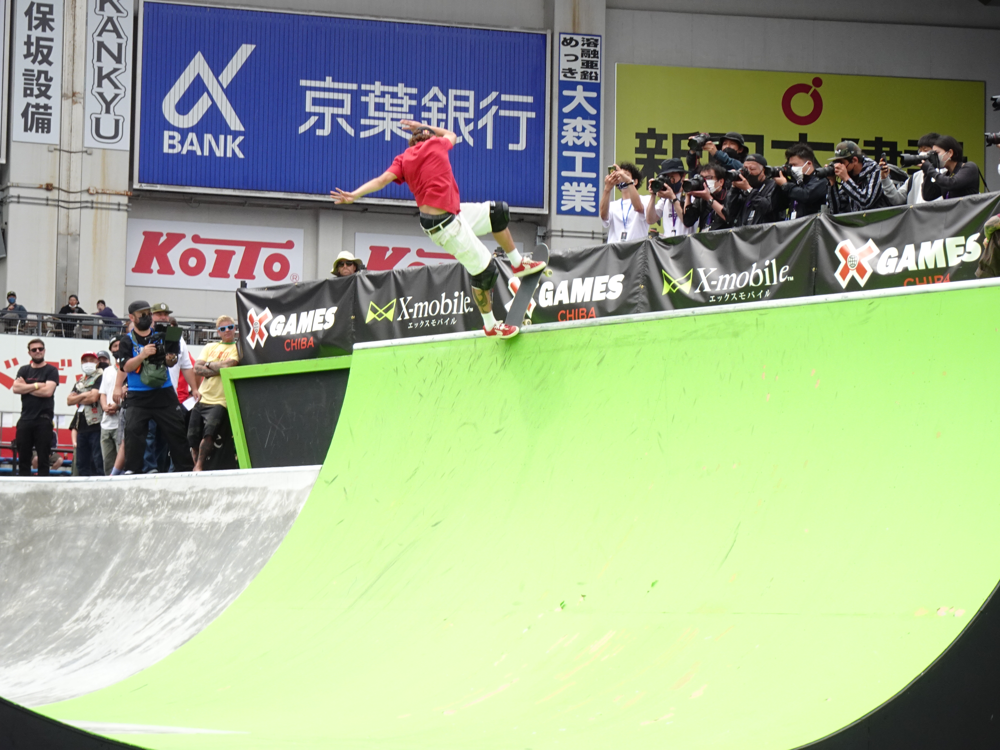

O X Games New Orleans 2026 marca o início de uma nova fase para uma das principais competições de esportes de ação do mundo. Entre os dias 24 e 26 de julho, o Caesars Superdome, em Nova Orleans, recebe a primeira decisão da MoonPay X Games League, campeonato por equipes criado para conectar diferentes etapas dos X Games ao longo de uma temporada.
O skate ocupa posição central na programação. Serão 11 disputas relacionadas à modalidade, incluindo provas masculinas e femininas de street, park e vert, além dos eventos de melhor manobra. A etapa também reunirá atletas do BMX, Moto X e uma apresentação experimental de scooter, mas é no skate que está a maior parte das competições e dos principais nomes anunciados.
Nyjah Huston, Gui Khury, Arisa Trew, Chloe Covell, Sky Brown, Sora Shirai, Liz Akama e Tom Schaar estão entre as estrelas destacadas para o evento. Além das medalhas individuais, os resultados poderão decidir o primeiro clube campeão da história da X Games League.
O que é o evento
A X Games League, também chamada de XGL, é uma competição profissional por equipes criada como uma extensão dos X Games tradicionais.
A liga foi lançada em 2026 com a proposta de transformar determinados eventos isolados dos X Games em uma temporada conectada. Os atletas continuam disputando medalhas individualmente, mas também representam clubes e acumulam pontos para essas equipes.
A XGL foi desenvolvida como uma liga:
- Global
- Mista, com homens e mulheres nos mesmos clubes
- Disputada por equipes
- Organizada em várias etapas
- Dividida entre temporadas de verão e inverno
- Conectada a uma classificação acumulada
Na temporada de verão, os clubes são formados por atletas do skate e do BMX. A estrutura de inverno, prevista para estrear em 2027, terá equipes ligadas ao snowboard e ao esqui.
Ao todo, o projeto prevê oito clubes: quatro de verão e quatro de inverno. A primeira temporada de verão conta com XC Los Angeles, XC New York, XC São Paulo e XC Tokyo. A sigla “XC” significa X Games Club.
Por que a X Games League foi criada
Durante décadas, os X Games funcionaram principalmente como grandes eventos independentes. Um atleta podia participar de uma edição, disputar uma medalha e encerrar sua campanha ali, sem que o resultado estivesse obrigatoriamente ligado ao evento seguinte.
A criação da XGL procura desenvolver uma história contínua. Em vez de acompanhar apenas uma final de street ou park, o público pode observar o desempenho de um atleta e de sua equipe durante toda a temporada.
Entre os principais objetivos do modelo estão:
- Criar rivalidades entre clubes
- Dar continuidade às disputas entre uma etapa e outra
- Aumentar a identificação dos torcedores com equipes e atletas
- Construir uma classificação de temporada
- Ampliar as possibilidades de remuneração dos competidores
- Desenvolver propriedades comerciais ligadas aos clubes
- Fortalecer a presença global dos X Games
Os dirigentes da liga também apresentaram o novo formato como uma forma de aproximar atletas, cidades, patrocinadores e comunidades locais. Os clubes possuem uma identidade regional, mas podem contratar competidores de qualquer nacionalidade.
Qual é a diferença entre os dois formatos
A mais importante está na continuidade dos resultados.
Nos X Games tradicionais, o principal objetivo é conquistar uma medalha naquela edição. O desempenho não precisa gerar consequências esportivas para outra etapa.
Na X Games League, os atletas disputam duas competições simultaneamente:
- A classificação individual da prova
- A classificação coletiva da equipe
Um skatista pode ganhar o ouro no street e, ao mesmo tempo, somar pontos importantes para seu clube. Essa pontuação é acumulada durante as etapas e ajuda a definir o campeão da temporada.
O modelo tradicional, porém, não desapareceu. Nem todas as modalidades e nem todos os eventos dos X Games precisam fazer parte da pontuação da XGL. Competições como o Moto X continuam presentes em Nova Orleans, mas não integram inicialmente a liga de verão, concentrada em skate e BMX.
Portanto, a XGL não substitui integralmente os X Games. Ela acrescenta uma nova camada de disputa à estrutura já conhecida.
A X Games League foi apresentada como uma estrutura permanente e como o novo braço profissional da marca, mas isso não significa que todos os eventos futuros serão obrigatoriamente disputados pelo sistema de clubes.
A organização pode determinar quais modalidades e etapas valerão pontos para a liga. Outras competições podem continuar funcionando como eventos tradicionais, com medalhas individuais e atletas convidados.
Também existem os free agents, competidores que não foram selecionados no draft inicial. Eles podem receber convites para disputar provas individualmente e, em determinados casos, preencher espaços deixados nos clubes por lesões, dispensas ou necessidades de elenco.
A tendência é que o sistema de liga ocupe espaço crescente no calendário, mas os X Games continuam podendo promover eventos fora da classificação coletiva.
Como funciona a temporada de verão de 2026
A primeira edição do X Games League foi dividida em três etapas:
- X Games Sacramento: 26 a 28 de junho
- X Games Chiba: 4 e 5 de julho
- X Games New Orleans: 24 a 26 de julho
Sacramento abriu oficialmente a competição. Chiba, no Japão, recebeu a segunda parada. Nova Orleans ficou responsável pela etapa final e pela definição do primeiro campeão.
Os pontos obtidos pelos atletas nas provas de skate e BMX são somados à classificação de seus respectivos clubes. Ao final da programação em Nova Orleans, a equipe com a maior pontuação acumulada será declarada campeã da temporada de verão de 2026.
Classificação atual das equipes:
- XC Tokyo — 1.770 pontos
- XC New York — 1.770 pontos
- XC São Paulo — 1.610 pontos
- XC Los Angeles — 1.510 pontos
Participantes por equipe
Os quatro clubes começaram a temporada com dez atletas selecionados no primeiro draft da XGL, divididos entre skate e BMX. As páginas atuais de alguns clubes exibem nomes adicionais, ligados à dinâmica de free agents, convites e substituições durante a temporada.
A relação abaixo reúne todos os atletas atualmente apresentados pela organização dentro dos quatro clubes. A escalação de cada prova ainda depende da modalidade, do convite e das condições de participação. Alterações de última hora podem ocorrer.
XC São Paulo
General manager: Bob Burnquist
Skate:
- Gabriela Mazetto
- Sky Brown
- Giovanni Vianna
- Luigi Cini
- Gui Khury
- Raicca Ventura
- Ibuki Matsumoto
BMX:
- Garrett Reynolds
- Ryan Williams
- Queen Saray Villegas
O XC São Paulo possui a maior concentração de brasileiros entre os quatro clubes. Gui Khury é uma das principais referências do vert, enquanto Raicca Ventura chega como nome importante do park feminino.
Raicca ganhou espaço entre as principais atletas da nova geração, trajetória reforçada por seu desempenho na temporada com participação na final do mundial em Roma.
XC New York
General manager: Steve Rodriguez
Skate:
- Nyjah Huston
- Jagger Eaton
- Bryce Wettstein
- Tate Carew
- Momiji Nishiya
- Chloe Covell
- Ginwoo Onodera
- Heili Sirvio
- Paige Heyn
BMX:
- Daniel Sandoval
- Logan Martin
- Hannah Roberts
O XC New York reúne um dos grupos mais fortes do skate street. Nyjah Huston é o capitão e principal referência do time. O norte-americano soma 15 medalhas de ouro nos X Games e construiu uma carreira marcada pela regularidade, pela dificuldade técnica e pelo domínio em grandes competições.
XC Tokyo
General manager: Harumi Suzuki
Skate:
- Moto Shibata
- Yumeka Oda
- Sora Shirai
- Arisa Trew
- Mizuho Hasegawa
- Toa Sasaki
- Coco Yoshizawa
- Chris Joslin
- Shiloh Catori
- Miyu Ito
BMX:
- Kevin Peraza
- Rim Nakamura
- Miharu Ozawa
O líder da classificação possui um elenco numeroso e tecnicamente diverso. Sora Shirai, Yumeka Oda, Coco Yoshizawa, Toa Sasaki e Miyu Ito formam uma base extremamente forte no street.
Arisa Trew é o principal nome das transições. A australiana, campeã olímpica do park, também compete no vert e chega a Nova Orleans com dez medalhas de ouro nos X Games. Mizuho Hasegawa e Moto Shibata reforçam as provas de rampa, enquanto Chris Joslin acrescenta experiência ao street masculino.
A variedade do elenco ajuda a explicar por que o XC Tokyo chegou à decisão na liderança.
XC Los Angeles
General manager: Sharalee “Haze” Hazen
Skate:
- Tom Schaar
- Dashawn Jordan
- Cocona Hiraki
- Filipe Mota
- Liz Akama
- Lilly Erickson
- Mia Kretzer
BMX:
- Marcus Christopher
- Brady Baker
- Perris Benegas
Tom Schaar é o principal nome do clube nas transições. O norte-americano pode competir tanto no park quanto no vert e chega com quatro medalhas de ouro nos X Games.
Liz Akama e Cocona Hiraki estão entre os destaques do skate feminino japonês. Dashawn Jordan e o brasileiro Filipe Mota representam a equipe no street masculino.
Apesar de ocupar a quarta posição, Los Angeles possui atletas capazes de conquistar medalhas e provocar mudanças importantes na classificação final.
As modalidades que serão disputadas
Street masculino e feminino
Utiliza uma pista inspirada nos obstáculos encontrados em ambientes urbanos. Escadas, corrimãos, bancos, bordas, rampas e manual formam o percurso.
Os atletas tem três voltas de 45 segundos e vale melhor nota dentre elas, sendo avaliados por dificuldade, execução, criatividade, fluidez e aproveitamento da pista. Grinds, slides, flips, manuais e combinações técnicas fazem parte das linhas.
A evolução do street está diretamente ligada ao trabalho de skatistas que criaram e popularizaram manobras fundamentais. Nesse contexto, a história de Rodney Mullen ajuda a explicar como o repertório da modalidade se tornou tão amplo.
Street Best Trick masculino e feminino
Os atletas não precisam montar uma volta completa. O objetivo é executar a melhor manobra da sessão ,tendo 6 chances cada skatista.
O formato estimula tentativas de maior risco e dificuldade. Uma única execução pode decidir a medalha, desde que reúna criatividade, controle, técnica e uma aterrissagem limpa.
Park masculino e feminino
É disputado em uma pista com bowls, transições, hips, quarters, paredes e diferentes níveis de profundidade., cada skatista tem direito a 3 voltas de 45 segundos, valendo a melhor nota dentre elas.
A modalidade exige velocidade, amplitude e boa leitura do percurso. O skatista precisa aproveitar várias áreas da pista e conectar aéreos, grinds e manobras de borda sem perder o ritmo.
Park Best Trick masculino
O Park Best Trick masculino será uma das novidades de Nova Orleans. A disputa faz parte dos Spotlight Events, plataforma criada pelos X Games para testar modalidades e formatos que podem ganhar espaço permanente no futuro.
Os atletas utilizarão os obstáculos do park para tentar uma única manobra de alto impacto. A organização pretende observar a participação dos competidores, a reação do público e o engajamento gerado pela prova antes de decidir se o formato continuará no calendário.
Vert masculino e feminino
O vert é disputado em uma grande rampa em formato de “U”, com paredes que terminam verticalmente.
Os skatistas ganham velocidade ao atravessar a rampa e executam manobras aéreas acima da borda. Amplitude, rotações, grabs, controle corporal, variedade e aterrissagem são elementos decisivos para a nota, sendo que atleta tem direito a três voltas de 30 segundos, valendo a melhor nota dentre elas.
Bob Burnquist e Tony Hawk são dois dos responsáveis pela modalidade se difundir e ser uma âncora dos X Games a décadas.
Vert Best Trick masculino e feminino
O Vert Best Trick concentra toda a disputa em uma única manobra. Cada atleta recebe tentativas para buscar o movimento mais difícil da sessão.
É uma prova historicamente associada à progressão do skate. Rotações consideradas impossíveis em uma geração passam a ser utilizadas como referência pela seguinte, aumentando constantemente o limite técnico da modalidade.
Principais skatistas para acompanhar
- Nyjah Huston
Maior vencedor do skate street masculino nos X Games, com 15 ouros. Representa o XC New York e segue como uma das grandes referências de consistência competitiva. - Gui Khury
Especialista em vert e integrante do XC São Paulo. Possui 12 medalhas de ouro e está entre os atletas mais capazes de apresentar uma manobra histórica no best trick. - Arisa Trew
Campeã olímpica do park e dona de dez ouros nos X Games. Sua capacidade de competir no park e no vert faz dela uma peça decisiva para o XC Tokyo. - Chloe Covell
Uma das principais atletas do street feminino. A australiana possui seis medalhas de ouro nos X Games e representa o XC New York. - Sky Brown
Integrante do XC São Paulo, combina amplitude, estilo e experiência internacional nas provas de park. - Sora Shirai
Nome importante do street japonês e peça central do XC Tokyo. Sua técnica e criatividade podem ser decisivas tanto na prova completa quanto no best trick. - Tom Schaar
Principal referência do XC Los Angeles nas transições. Pode disputar park, vert e eventos de melhor manobra. - Liz Akama
Representante do XC Los Angeles e uma das atletas mais técnicas do street feminino. - Raicca Ventura
Uma das maiores esperanças brasileiras no park feminino. Sua capacidade de ganhar velocidade e construir linhas agressivas pode render pontos importantes ao XC São Paulo.
Programação do skate no horário de Brasília
Sexta-feira, 24 de julho
- 22h — Skate Vert feminino
- 22h50 — Skate Street Best Trick masculino
Sábado, 25 de julho
- 15h — Skate Vert Best Trick feminino
- 16h30 — Skate Vert Best Trick masculino
- 17h — Skate Street masculino
- 21h15 — Skate Park masculino
- 22h15 — Skate Street feminino
Domingo, 26 de julho
- 15h — Skate Vert masculino
- 16h — Skate Park feminino
- 19h — Skate Park Best Trick masculino
- 19h30 — Skate Street Best Trick feminino
A programação oficial ainda pode sofrer ajustes operacionais.
Onde assistir ao X Games New Orleans 2026
No Brasil, a principal transmissão oficialmente indicada será pelo canal dos X Games no YouTube.
Por que o X Games New Orleans 2026 é histórico
O evento será responsável por coroar o primeiro campeão da história da X Games League de verão.
Também representa um teste importante para o futuro da marca. A organização procura descobrir se o público adotará clubes, rivalidades e classificações acumuladas sem perder a conexão com os valores tradicionais do skate: liberdade, criatividade, estilo individual e busca permanente por progressão.
O street preserva a ligação com os obstáculos urbanos. O park valoriza velocidade, amplitude e leitura de pista. O vert mantém viva a tradição das grandes rampas. As provas de best trick levam os competidores ao limite, criando o ambiente ideal para manobras inéditas.
Com medalhas individuais, pontos coletivos, equipes internacionais e forte participação brasileira, o X Games New Orleans 2026 será o encontro entre duas eras. De um lado, está o formato que transformou skatistas em ícones globais. Do outro, surge uma liga profissional, conectada por temporadas, clubes e uma disputa contínua pelo campeonato.